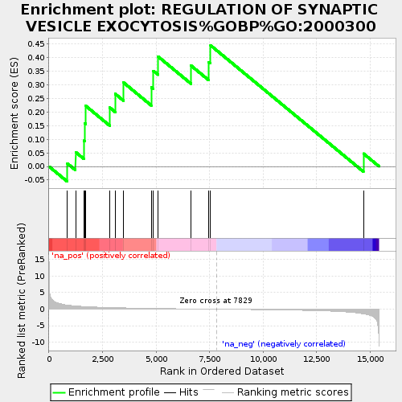

| | | Dataset | rank_df |
| Phenotype | NoPhenotypeAvailable |
| Upregulated in class | na_pos |
| GeneSet | REGULATION OF SYNAPTIC VESICLE EXOCYTOSIS%GOBP%GO:2000300 |
| Enrichment Score (ES) | 0.44430602 |
| Normalized Enrichment Score (NES) | 2.1047513 |
| Nominal p-value | 0.0 |
| FDR q-value | 0.43817466 |
| FWER p-Value | 0.997 |
Table: GSEA Results Summary

Fig 1: Enrichment plot: REGULATION OF SYNAPTIC VESICLE EXOCYTOSIS%GOBP%GO:2000300
Profile of the Running ES Score & Positions of GeneSet Members on the Rank Ordered List
| PROBE | GENE SYMBOL | GENE_TITLE | RANK IN GENE LIST | RANK METRIC SCORE | RUNNING ES | CORE ENRICHMENT | | 1 | FMR1 | | | 859 | 1.237 | 0.0109 | Yes |
| 2 | RIMS1 | | | 1241 | 0.968 | 0.0528 | Yes |
| 3 | RIMS2 | | | 1625 | 0.796 | 0.0946 | Yes |
| 4 | PREPL | | | 1664 | 0.784 | 0.1588 | Yes |
| 5 | RAB5A | | | 1721 | 0.765 | 0.2219 | Yes |
| 6 | RAB3A | | | 2841 | 0.485 | 0.2159 | Yes |
| 7 | UNC13B | | | 3093 | 0.440 | 0.2662 | Yes |
| 8 | RAB3GAP1 | | | 3479 | 0.383 | 0.3079 | Yes |
| 9 | STX1B | | | 4777 | 0.227 | 0.2904 | Yes |
| 10 | STXBP1 | | | 4876 | 0.216 | 0.3507 | Yes |
| 11 | LRRK2 | | | 5099 | 0.191 | 0.4029 | Yes |
| 12 | SYN1 | | | 6636 | 0.066 | 0.3699 | Yes |
| 13 | SEPT5 | | | 7464 | 0.013 | 0.3828 | Yes |
| 14 | RIMS3 | | | 7545 | 0.008 | 0.4443 | Yes |
| 15 | NLGN1 | | | 14688 | -1.414 | 0.0473 | No |
Table: GSEA details [plain text format]
Fig 2: REGULATION OF SYNAPTIC VESICLE EXOCYTOSIS%GOBP%GO:2000300: Random ES distribution
Gene set null distribution of ES for REGULATION OF SYNAPTIC VESICLE EXOCYTOSIS%GOBP%GO:2000300